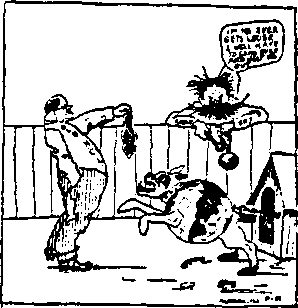

p I water Oaklax^ Md 9-X
March 31,1920, Vol. 1, No. 14
|S| Published every M*r Iwl 1265 Broadway, VlF ^ewFori,N.r,{7.S.Z
T« teto a C«>y—tLM a Taw Forelca Subscription Price |100
Volume I WEDNESDAY. MARCH 01, 1223 Number II
CONTENTS 0/ the GOLDEN AGE
LABOX and ECONOMICS Shipyard Workers’ Wages..419 Foreign Wage Itema
Other Government Miscellaneous Wago Itema..421
New York Waze Items........41’J Calm Judgment Needed
Massaebueetta Wage Items..420 British Economics________^...422
SOCIAL and EDUCATIONAL
MANUFACTURING and MINING Failing Mineral Resources..423 The Making of a Ford
FINANCE. COMMERCE TRANSPORTATION
New York Jitney Lines______427 Bufineas Conditions in C. 8. 429
POLITICAL, DOMESTIC infl FOREIGN
........Si Qu«U»»» to Cu>dld«t«
AGRICULTURE and HUSBANDRY
Profit and TjObb on Hosiery for Cattle
the Farm..........................433 A Farmer Congress
SCIENCE sad INVENTION
Theory of Relativity............435 Heads to the North
...........*38
SOUSEwIFERY*and HYGIENE
Keep Well.............—..437
TRAVEL and
RELIGION sod
Those Dear Familiar Feet..414
Internal Cleanliness ..........437 Health Food Recipes..—..438
MISCELLANY Unexpected Exits..........
A Correspondent Bees BeiL.440
PHILOSOPHY Juvenile Bible Study
r<Hr.'?,; <v«y Mhw ai
y.‘f> Frc«c^«v. Few York City. N- Y. hr
WOODWGBTN. KUDGINGS Md MAJKT1N
CLAYTON J. WCXXDWOBTH tmwiasr.. -arcs- »Ertavv4"“ “
Tim Cwre a Corr—41.50 a Ybx*. Make remittances to The Golden* Aje.
Volume I Ne* York, Wedneeday, March 31, 1920 Number 14
SHIPYARD WORKERS’ WAGES
WHEN the constant sinking of merchant vessels convinced the United States that it mast enter the World War, one of the first things decided upon was to build a large fleet to replace the vessels sunk and to transport the American army to France. To build this fleet •within the short time in which it must be done required an army of ship workers. These workers had to be taken from other American industries, already crippled by the draft. The only way these workers could be obtained was by offering them wages large enough to induce them to leave their jobs and their homes and go to the points where the shipyards were located, and Eve in the overcrowded conditions then necessary. The wages had to be enough, in effect, to enable each to support two homes.
The wages necessarily paid in the shipyards affected the whole country. Other employers everywhere had to boost the wages in order to hold their men. Every time they boosted the wages of their men they boosted the prices of the things which the men made, so as to get their money back. Thus the wave of high wages and high prices spread.
Government employes in common with other workers felt the pinch of rising prices and clamored for relief. In August, 1919, over the protest of the Postoffice Department, the National Association of Postal Employes succeeded in securing the passage of a bill granting to the clerks and carriers an average increase in salary of about $150 per year. About 250,000 men and women workers w’ere affected, thus increasing the postal budget by about $40,-000,000 per year.
A Uttle after the bill for relieving the condition of the postal workers had passed, attention was conspicuously drawn to another class of workers in Washington, and the Nolan biU was passed making the minimum wage for Government service at the capital $90 per month. This raised the -wages of 66,000 employes, some of whom wrere then receiving only $60 and had not had an increase of salary in eleven years. One of these -was a woman eighty-four years of age who entered the Government employ forty-nine years before at $432 per year and was in the fall of 1919 receiving $729 per year.
THE advance of wages of Government employes was not confined to Washington. It also occurred in New York City, where an extensive campaign for better living conditions was carried on in the fall of 1919 by policemen, firemen and other municipal employes. As a result of the agitation the payroll of the city for 1920 was increased to the extent of $10,000,000, an average increase of about $100 to each of the 109,000 employes on the city payroU. Of this amount $1,250,000 went to the firemen and $2,750,000 to the police. These increases raised the pay of first-grade firemen and policemen to $1900 per year. Before the increase went into effect it was said that the poEcemen of New York were receiving less wages than the union dishwashers in the restaurants. No increases were made in Nev’ York to city employes receiving more than $3000. We think Mayor Hylan handled this matter in a very just and proper way. Others may well profit by his example.
ACCORDING to the information which reaches .us, window cleaners in New York City receive $36 per week, telegraph operators $37 to $40 per week, street car conductors $6.40 per day, and paperhangers $8 per day. Tailors get $50 per week for a forty-four-hour week; tailors’helpers get $40 and the women helpers get $35. Alteration workers get $45 per week. All garment workers get time and a half for overtime.
The president of one of the largest retail clothing concerns in New York, a concern which does its own manufacturing, has stated that the labor costs in clothing are now so high that fully 80% of the prices charged go into the labor required for making the cloth and trimmings and putting them into the finished suit. It is also said that in the last three years the workers have received advances in wages of more than 100%. A bright feature for dealers in clothing at present is that on account of the prevailing shortage in all lines there are no losses from shopworn goods, as nothing is carried over from one season to another.
In September the longshoremen of New York demanded an increase of 15 cents per hour, bringing their wage up to $1 per hour, with double pay for overtime and for handling salvage. In the same month the stevedores of Porto Rico, backed by the International Longshoremen’s Union of America, surprised the natives and surprised the world by suddenly presenting demands for an increase from 30 cents per hour to 75 cents per hour, with time and a half for overtime, night work, Sundays and holidays.
In August, 1919, the average weekly wages in New York state were $23.85. The average weekly earnings of factory workers were as follows:
|
Water, light and power___ |
___$28.80 |
|
Metals and machinery___ |
__26.44 |
|
Paper manufacture___ |
___ 25.96 |
|
Sjone, clay and' glass_____ |
__24.11 |
|
Printing and paper goods---------- |
____24.05 |
|
Chemicals, oils and paints-- |
___ 23.40 |
|
Furs, leather and rubber__ |
___23.30 |
|
Clothing___________________ |
__22.56 |
|
Wood manufactures ... |
. 21.99 |
|
Food, beverages, tobacco------ |
__21.69 |
|
Textiles_____________ |
___ 18.88 |
AT BOSTON in October the National Indus
- trial Conference Board reported that in the five years from July 14,1909, to March 19,1919, the wages in eight leading industries had advanced all the way from 62% to 110% to offset advances in cost of living ranging all the way from 74% to 112%. Thus the net condition of the workers is worse by 12% to 2%.
Items frequently get into the New York papers which are calculated to misrepresent the workers in various parts of the country. The papers here have been circulating stories to the effect that shoe workers in Boston are making $120 per week. Like the stories of the fabulous wages paid to engineers and conductors, this is probably some isolated case where a single worker by working two days in one has made this wage for one week. We doubt that this is a truthful report.
It could hardly be true in Brooklyn, where the 8000 shoe workers average between $35 and $40 per week. The cutters make a little more than this, their earnings on piece work frequently running to $60 per week and sometimes as high as $75 per week. Those who make the higher wages have to work very hard for it, and they earn their money. The shoe factories are trying now to standardize costs, and the workers are trying to get a standard wage. Where the employes do not work at piece "work they are asking for $1 per hour for a forty-four hour week.
In Massachusetts there has been established a minimum wage of $12.50 for candy workers. This amount is said to be the very least that a self-supporting woman can exist upon and maintain her health. The $12.50 is itemized as follows. We hope the thoughtful will not fail to take note of the sum which is set aside for self-improvement. It represents the chance that the young woman has of getting a footing in a better occupation:
|
Board and lodging______ |
_____________$7.00 |
|
Clothing_____ |
-------- 2.25 |
|
Carfare __________.____ |
—..........7 6 |
|
Laundry _______ |
----.50 |
|
Vacation____________-_____ |
----- .40 |
|
Recreation_______._____ |
----.30 |
|
Doctor and dentist__ — |
___ 30 |
|
Savings and insurance ____ |
___ 30 |
|
Incidentals....... i____ |
__25 |
|
Newspapers and magazines---- |
.........18 |
|
Self-improvement____________ |
----.15 |
|
Church___._______________ |
.......... .11 |
$12.50
Foreign Wage Items
THE wage situation in England is still in a very unsettled condition. Large sums were until recently paid out in unemploj-ment pensions. Table hands in England now receive minimuni wages of $15 per week. This is a great deal more than formerly received, but does not represent a higher wage when the cost of living is taken into account.
Wages for the well-to-do continue to improve! In 1909. there were in England 11,000 men whose earnings were $25,000 per year, and in 1919 this number had become 18.000. In 1909, there were 166 whose incomes were $250,000 per year; in 1919 this number was 321, almost double. In 1909, there were 65 whose incomes were over $500,000 per year; in 1919 this number was 148, more than double. As a class, the well-to-do are as anxious as other workers that their wages should not be reduced, and they generally move in select circles where their opinions count for something.
WHAT wages ought a rich man to receive?
What wages ought anybody to receive? It all depends upon circumstances; upon what his value is to the community. It is often more profitable to a business, and therefore to a community, to have an expert brought in at $100 per day than to have all the wages of all the .regular employes in the business advanced 10%. The expert might save the business; the unwise raise in wages might kill it. The right way to compare skill and energy and get the liest results from both is an unknown w’ay. The nineteenth century did not know all about this problem. Perfect economic wisdom is ahead, not behind. We all want to do full justice to the workers of every class.
Ford, of the Ford Motor Car interests, is trying to solve the problem for himself and his men, and let economists of the next generation decide whether lie acted wisely or foolishly. But he is getting results. The minimum wage of his men until recently was $6 per day, but instead of bemoaning this, as is the case with so many capitalists, he has now raised the minimum wage to $3 per day, the wages in some instances going as high as $12 per day. Besides this, he expects by next summer to reduce the prices of Ford automobiles and to have back exclusively in his own hands all the stock of the Ford company, now approximating in value $1,000,090,000. Titis would bo the largest single enterprise over owned and managed by one man.
In September, the board of trustees of the University of Chicago increased the salaries of all faculty members by an addition of approximately 20% to partially cover the 80% increase in cost of living. This reached all those whose salaries were less than $7000 per year.
Turning from college professors to street railway men, the Amalgamated Association of Street and Electric Railway Employes stated before the Federal Electrical Railways Commission in October that a minimum wage of $6.40 was desired for each employe as a living wage. To some papers this seems a terrible thing: they argue that this would be entirely too much to pay to a stenographer. Maybe it would; it all depends upon what the stenographer had to do with his or her wages. It costs stenographers just as much to live as it does other people, and it takes as much brains to transcribe shorthand notes and operate a typewriter as to collect fares or run an electric motor.
IT IS a time for calm judgment. In his statement to the railway shopmen shortly before he began his Western trip, the President said:
“It is neither wise nor feasible to take care of increases in the wages of railroad employes at this time by increases in freight rates. Only by keeping the coat of production on its present level, by increasing production and by rigid economy and saving on the part of the jieo-ple, can we hope for large decreases in the burdensome cost of living which now weighs us down. Demands unwisely made and passionately insisted upon at this time menace the peace and prosperity' of the country as nothing else could, and thus contribute to bring about the very results which such demands are intended to remedy.'.’
In the spirit of the President's counsel,The painters, paperhangers and decorators of Hoboken in August last voted to renounce their demands for $1.50 increase per .day and decided to make the best of their $6.50 per day. At about the same time certain representatives of the Midvale Steel Company, in convention at Atlantic City, issued a published protest against further advances in wages, declaring, "That the persistent and unceasing demand of workmen employed in all classes and kinds of industries for a shorter day's work and an increased wage in order to meet the present high cost of living is uneconomic and unwise and should not be encouraged7’. We do not know whether or not it is true, as reported, that the Midvale Steel Company paid the expenses of these representatives to and from Atlantic City and •while there. If so, it would detract somewhat from the value of their published statement.
To settle the wage warfare we need the guidance of the wisest worker of all the ages. Not many have noticed the premium which the Lord puts upon •work. Not eternal loafing but eternal work in the interest of others is held out in the Scriptures as the reward of the Lord’s overcoming saints. Of the divine attributes it is said, “They have no rest day and night”. (Revelation 4: 8) Other statements of similar import are the following: “My Father worketh [right along] until now, and I work”. (John 5:17) “I must work the works of him that sent me, while it is day: the night cometh when no man can work.” (John 9: 4) “We are his workmanship, created in Christ Jesus unto good works.” (Ephesians 2:10) “It is God which worketh in you both to will and to do.” (Philippians 2:13) “We are laborers together with God.” (1 Corinthians 3:9) “Workers together with him.” (2 Corinthians 6:1) “Who shall change the body of our humiliation, that it may be fashioned like unto his glorious body, according to the working whereby he is able to subdue all things unto himself.”—Philippians 3:21.
THOSE who have given the matter careful study claim that if the war interest is to be paid and if labor and capital are to receive their present rewards, England must produce two or three times as much as she did in 1913. But although there is less unemployment in England now than was ever known before, and although production is going ahead full blast, yet the production is not enough to enable the people as a whole to. turn over annually to the government the three or four billion dollars necessary to meet the interest charges o'wed to those in England and America who financed the war.
The economics of the situation would seem to say in stentorian tones that if it was necessary for the people to work and save during the war in order to win it, it is now necessary for them to work and save to recover from its effects. The people are working hard, but they are not working the same hours as formerly; and it is claimed that the figures show that in proportion as the hours were reduced the production was reduced. This helps to keep the cost of living up, and has the effect of narrowing the market for the goods produced, because the higher the prices of goods the fever people can afford to buy. Production is the backbone of prosperity.
The people are not as frugal as during the war, or even before the war. The food statistics show that they are eating more per capita than they did. This is partly due to the fact that more families than formerly have been able to lay in stores of provisions, and partly to the reaction which has followed the strain of the years of privation.
Then the war has had the effect of fostering extravagance. War profits in some directions have been enormous, and a get-rich-quick boom has been sweeping the country. Speculation is rife, the oldest cotton mills are changing hands, and war profits are being used for other things than the payment of debts. Small factories, capable of producing but half a dozen cars per week, have been flooded with orders for thousands of automobiles. It is estimated that 300,000 people have ordered cars and paid $250 apiece deposit upon them; but multitudes of these orders cannot be filled because raw materials cannot be had. Mills and factories are being sold at five times their pre-war figures. Trusts are in the making, and what was a land of small corporations promises to be a replica of America. Minds accustomed to war cannot accustom themselves to the economic conditions of peace.
The women workers, of whom 4,000,000 were drawn into industry during the war to take the place of men, cannot be induced to return to work as servants; and their griefs, family disruptions, unfamiliar work and high wages have made them factors of a kind never before encountered. The men, too, after living in the open for five years, can with difficulty bring themselves to face the daily grind of factory work, and are disturbed by the high cost of living and the inequalities of the wage situation. All of these items work against the phenomenal production which seems to be so necessary in an economic sense.
In order to allay discontent the government has been selling flour at less than cost, operating the railways at an annual loss running into the hundreds of millions, and producing and marketing coal on the same basis. This cannot go on indefinitely. It is folly to think that wealth is inexhaustible, and that any government can continue to expend without having a day of reckoning with those whose money it is spending.
HAPPY, intelligent, sweet-dispositioned children constitute the nation s most valuable asset. Kost children arc happy, intelligent and sweet if they arc well. The Children’s Bureau of the Department of Labor describes a well-nourished child as one who “first of all, measures up to racial and family standards of his age in height and weight. He has good color, bright eyes—no blue or dark circles underneath them—and smooth, glossy hair. His carriage is good, his step elastic, his flesh firm, and his muscles well developed. In disposition he is usually happy and good-natured; he is brimful of life and animal spirits and is constantly active both physically and mentally. His sleep is sound, his appetite and digestion good, his bowels regular. He is, in short, what nature meant him to be before anything else—a happy, healthy young animal.”
It is a most unfortunate fact that the average American family is shrinking in size and that, as previously stated in these columns, the quality of the children, physically speaking, is poor. We think the people of this country ought to give more attention to building up those children and less to building guns and battleships. Nor are we anxious to have the children properly developed so that they will be the better cannon fodder when some wave of criminal lunacy and greed under the guise of militarism sweeps over the land. We want the children to .grow up so that they can enjoy the blessings of life and peace.
Some progress is being made in the care of the children. In 1880 the infant mortality in New York City was 286 per thousand infants Lorn; by 1918 this had fallen to 92. And even in the orphan asylums, where one would hardly look for progress along these lines, it is claimed that when recently a record was taken of the weights and heights of the children in New York state asylums, as compared with children outside the institutions, even the thrifty State Board of Charities found that only a small percentage of undernourishment existed. It is claimed that one important reason for this is that all the food the children do get in these institutions is properly utilized. The children go to bed early, and do not have their digestive -apparatus injured by meals that arc too heavy for them or by food between meals. A person who remains in bed several hours longer than the normal hours of rest does not require as much food as one that is awake and active during a portion of that time.
Herbert Hoover has expressed his conviction that, if the children of the United States are properly cared for, the whole problem of Americanization will be solved in twenty years, and that “the attitude of a nation toward child welfare ■will soon become the test of civilization"— rather than the number of battleships it possesses, we feel like adding. Mr. Hoover is supposed to be in grooming by the high priests of Wall Street as the joint candidate of the now practically unified European, British and American interests, representing what remains of former American parties. He is no doubt a very fine man, and has touched American hearts in the right place, in speaking to them about their children. That is what Americans want to know —how their children can be properly cared for, physically, mentally and in every way, so that they will be qualified for manhood and womanhood. Manifestly, then, the thing to do is to give attention to them,' to consider their needs.
One of the first things that children require, if they are to keep well, and if they are to grow, is milk. Most children in America get the milk they need, although there are millions who do not, but in Europe, following the war, there are literally thousands upon thousands who were several years old before they had ever tasted milk, and who did not know what bread is. When these children were reached by the food reliefs they were emaciated or bloated from starvation; but after the condensed milk stations were opened, many of these poor little fellows that were not able to stand because malnutrition had so softened their bones, were able to walk and play in two weeks time, all because their starving bodies had a little watered condensed milk fed to them. The same children were so in need of fats that when given plain army soap to help them get cleaned up, they ate the soap.
As a result of the relief work, the disease mortality of the Belgian children is now less . than what it was before the war, despite the fact that they went through five years of famine. In New Zealand, where they did not especially feel the economic strain of the war, and where there is a superb nursing service, with hospital and medical care and instruction of mothers in the science of child nurture, the infant death rate is the lowest in the world.
THE national child labor law prohibits the employment of children under fourteen in factories, mills, canneries and workshops, and under sixteen in mines and quarries. It is estimated that child labor was reduced 40% in the .United States since this law went into effect, but the war affected these figures unfavorably and the conditions are still bad. There are forces working against effective child labor legislation. Southern cotton mills (financed in Wall Street) have contested the right of Congress to place a near prohibitive tax on child labor products, and the Supreme Court has declared unconstitutional the law prohibiting the use of child labor on any products that enter into interstate commerce.
During the war the number of young children "gainfully’’ employed increased greatly, as was inevitable, and the hours of labor of those who did work were also increased. Violations of the law are so common as to attract almost no attention. In the summer of 1918, in one state, despite the law that the minimum age for employment in canneries is fourteen years, there were found 721 children under that age, including fifty that were not yet ten years old. The 1910 census showed 1,419,098 children between the ages of ten and fifteen employed on farms and 338,420 in miscellaneous occupations, not including manufacturing and mining.
One of the first acts of the Czecho-Slovakian republic was to pass laws making the minimum age for child workers fourteen. In Belgium the minimum age for child labor is fourteen, and children and women are positively forbidden to work in acid factories or other plants where their health would be endangered. These laws are strictly enforced.
The conditions of children in the Argentine republic are very bad, due to the fact that the father docs not earn enough to support a family properly. Like the South of Ireland, the country is largely under the domination of ecclesiastical politicans, and what else can be expected? However, in less benighted lands conditions are not as favorable as we would like to see them; for even in enlightened Massachusetts investigations have shown that 30% of the families can not give the children schooling beyond the compulsory age limit.
IN THE eleven cities of New Hampshire:
Berlin, Concord, Dover, Franklin, Keene, Laconia, Rochester, Manchester, Nashua, Portsmouth, and Somersworth, with a combined population of 207,836, there were arrested for drunkenness in the year 1917, under the local option law then in effect, 9,260 persons. In the same cities during the year 1919 the total number of arrests for drunkenness were 1,660. This is a reduction of more than 80% for all the cities of the state taken together. .
‘ In three of the foregoing cities, Keene, Laconia, and Rochester, there were 369 arrests for drunkenness in 1917, due to liquor having been obtained elsewhere, as those cities were NoLicense cities in the year 1917. The wholesome effect of state-wide prohibition may be seen in the fact that in the same cities in 1919 the total arrests for drunkenness were 73.
This is a decrease in drunkenness, with its attendant miseries and crime, in which all decent men and women can rejoice. We discern the hand of God in the ruin of the liquor business in* America, and give God the glory for it.
THERE are four newspapers in Buffalo,
N. Y.; and one of them, evidently believing that the present high prices cannot continue and determined to build up a large circulation, suddenly surprised the other papers in the city by going back to the old rate of one cent for the daily paper and five cents for the Sunday paper. The cut in the price of the paper has caused considerable excitement, with numerous fights among the newsboys. It is said that the three higher-priced papers have combined to prevent newsboys and news-stands from selling the cheaper paper, and that the publishers have been compelled to hire girls to handle the paper in order to prevent street fighting among the newsboys, as the newsboys will not fight the girls.
TN THE GOLDEN AGE for October 1, 1919, * we presented facts showing that the oil basins in the United Stales are rapidly playing out. They will produce some oil for a long time yet, but the oil consumption for explosive motor engines and other purposes is now so great that the United States can no longer find within its borders sufficient crude oil to supply its needs and is importing large quantities front Mexico.
Fuel oil for steam-raising purposes is now being discouraged in the technical journals, the attention of users being drawn to the fact that the thermal efficiency of oil when used as a fuel is only 10% to 15%; whereas, when it is used in internal combustion engines, its thermal efficiency is from 30% to 35%. This gradually evaporating oil supply is sending up the price of'gasoline, and it must go higher and higher.
We used to think of the mineral resources of the United States as inexhaustible, and that is still a proper term to use in describing them; but it comes as a shock to have a Congress of Min, ing Engineers meet and solemnly consider what can be done to prevent the complete cessation of gold production in our country.
They call attention to the fact that the reduction in gold output of the United States in 1918, the last year for which figures are available, was $15,000,000 less as compared with the previous year. It is now only $68,476,700 per year. Gold is being used faster in the arts than it can be produced; and at that rate of decrease in production the whole story will be finished in less than five years. The trade demands for gold in the United States are about $90,000,000 per annum. It is now profitable to purchase gold from the United States Treasury, at the coinage value, and use it in the arts. In other words, gold is now really at a premium, though not monetarily so.
The gold-producing states, in the order of their importance as gold producers, are California. Colorado, Alaska, Nevada, South Dakota, Arizona, Montana, and Utah. Smaller quantities come from the Philippines, Oregon, Idaho, New Mexico, and Washington. Eleven other states produce negligible quantities.
Gold is failing elsewhere. Conditions similar to those in the United States prevail in South Africa. During 191S, as compared with 1917, there was a decline of approximately $10,000,-000 in the value of the total output of gold in the Transvaal region. Added to the declining production is the gold hunger' of the war, the extravagances due to inflation, which have led myriads of people into the purchase of articles made of gold or plated with it, and the hoarding which has been practised by the timid, who delusively hope that they can thus avert impending calamities.
The loss in silver production is not as great, amounting to only about $4,000,000: but the total value of the amount produced is some $2,000,000 less than the value of the gold produced ; and neither production amounts to much for a country boasting of 110,000,000 people. The value of the silver production in 1918 amounted to $66,485,129.
The silver-producing states, in the order of their importance as silver producers, are Montana, Utah, Nevada, Idaho, Colorado, and Arizona. Smaller quantities come from California, Alaska, New Mexico, Texas, Michigan, Washington, South Dakota, Oregon, and Tennessee. Twelve other states produce a little silver.
As a matter of fact, American mines are now actually producing a less tonnage of gold, silver, lead, zinc, and even of iron than they were several years ago. The statistics usually published make the value of the product seem to be more, but this is because of the vanishing value of the dollar. The actual quantity produced per capita is less than in former years.
The Scriptures seem to indicate that a time is coming -when gold end silver will not be as much prized as now. ‘T will make a man more precious than fine gold; even a man that the golden wedge of Ophir. Therefore I will shake the heavens [ecclesiastical powers], and the earth [usual social arrangements] shall remove out of her place, in the wrath of the Lord of hosts, and in the day of his fierce anger. Behold I will stir up the Medes against them, which shall not regard silver; and as for gold, they shall not delight in it."—Isaiah 13:12,13,17.
The Making of a Ford bv r. f. Rocthoff ONE of the wonders of the present industrial world is the malting of the Ford car. System and attention to detail have won for this industry a world-wide reputation. A detailed analysis of every problem of production has enabled Mr. Ford to put on the market thousands of cars at a moderate price, and still be able to pay his employes a minimum wage of $6.00 per day, and also receive a comfortable return tor his own efforts.
A visit to the Ford plant reveals some very interesting facts. In the warehouses immense quantities of material are handled, necessitating a systematic and orderly method of handling. Thousands of tons of iron and steel, piled tier upon tier, are classified as to kind and quality and stored in such a manner as to be easily accessible and ready for immediate use.
In the production departments each piece of production machinery’ is carefully studied with a view of its achieving the greatest possible results with the least effort, and of avoiding every possible waste. Each man has his specific duties to perform and the work is so simplified that an unskilled worker can, in a short time, produce a nbrmal day’s work.
Every employe is given an opportunity to make good at work to which he can adapt himself according to health, strength, size and ability. A tall man is given a tall man’s job, while the little man is saved the extra effort of a long’ reach, and possible over-exertion, which might prove a handicap to him. Too often large concerns loss sight of the fact that there is a human element about their employes.
The parts of the Ford car are first assembled in units; engine, radiator, steering wheel, axles, wheels and other parts being each assembled in different departments as units. These departments are known as sub-assembly departments, and serve as feeders to the final assembly.
The final assembly is accomplished on a pair of rails or tracks about four feet apart and eighteen inches from the floor and running the length of the building. To this track at various points the sub-assembled parts are conveyed by chutes, chain carriers, and other modern methods of conveyance. Beginning at the end of the track, the first units to be assembled are the axles and chassis. These assembled, a traveling chain is hooked to the prospective car. which starts it down the trac-k at the rate of a slow walk, while the various parts and assembled units are dropped into their proper places and secured. In these operations each man has his specific duty to perform, and the proper equipment to do Ids work in an efficient manner. One man places the part, while another puts in the bolts, and still another tightens them.
Upon reaching the end of the track the rear wheels of the car drop between two revolving grooved pulleys protruding through the floor, thus forcing them to turn. A driver then jumps on the car, throws in the clutch, which starts the motor, and away it goes—complete, less a body. The body is supplied in another department from an overhead chute and is bolted on. Then the car is complete, this final assembly having been accomplished while the ear was in motion and in less than half an hour.
As many as 2,600 cars have been produced in one day, this being an average of about five cars every two minutes. This stupendous output necessitates a perfect shipping schedule to avoid congestion in transportation, as obviously sb great a quantity of cars cannot be stored. To avoid this Mr. Ford has assembly plants in the larger cities to which parts and sub-assembled units are shipped and the cars assembled in these branches. In this way great economy is effected, it being cheaper to ship parts than to ship a completed car.
The quota for the Ford Company for 1920 is set at 1,000,000,000 cars, or one car for every 100 people in the United States. Prospects are that this mark, will be passed, as for the six months beginning with August, 1919, the output has been 506,000 cars.
The Ford industry is without question the most wonderful industry in the world both as to production and management, and recent concessions to employes have granted a very reasonable return for their labors, and it seems as though the Ford interests are a little oasis in the desert of human selfishness of our day.
What developments in industry will be possible for the betterment of humanity in the Golden Age are hardly imaginable now, even as the present achievements were not dreamed of fifty years ago. “Eye hath not seen, nor ear heard, neither have entered into the heart of man, the things which God hath prepared for them that love him.”—1 Corinthians 2:9.
T N MANY Western cities, and in some Eastern * ones, automobile bus lines or jitneys, as they are commonly called, are familiar features of the streets, and are a byproduct of the precarious conditions into which the electric street railways have mismanaged themselves. It was characteristic of New York City to wait until all the other cities in the country had tried jitneys before having anything to do’with them, bat the trolley strikes last Fall forced the issue and finally the jitney arrived.
On account of the strikes, and for other reasons, some of the electric railway companies in Brooklyn and Manhattan ceased operating certain lines which they found to be unprofit. able, and operated other lines only part of the distance. The Board of Estimates of the city, which is the ruling power, considering that an emergency in the city’s affairs had arisen, undertook to bring about a remedy. 1
The Board claimed that the changes in Brooklyn's transit facilities, with the consequent creation of 970 new transfer points, caused such congestion of traffic and people at certain points as -to threaten disorder, and that such disorders actually occurred. They therefore put eighty busses at work in Brooklyn and a number in New York, temporarily, in some instances, using policemen as checkers and starters at the bus terminals. It was astonishing how the people took to the new conveyances.
On November 14th, 114 of the busses carried 75,000 passengers daily. A little later it was claimed that 150,000 people were making use of them daily. It was not intended to run them beyond December 31, 1919, but they became so popular that it did not seem wise to discontinue them at least during the season of icy sidewalks, and on January 5th it was estimated that in Brooklyn alone 3,200,000 passengers had been carried upon them, with correspondingly vast numbers in Manhattan. ’
It is not to be wondered at that the trolley companies have fought tliis innovation; for some of them were losing money even before the jitneys came. The companies appeared in court asking for restraining orders on this progressive movement, and the courts decided that the jitneys should be permitted to continue the use of the streets in the interests of the people. t u
When the trolley companies appeared in court to ask for the injunction, they used every kind of argument except the one they knew would not hold good, i. e., that the people would not use the busses in any case. They did say that the Brooklyn trolleys were carrying sixty times as many passengers as the busses and were carrying them 4.2 miles as against the busses’ 3 miles, and that the busses could not possibly be operated at a profit.
They went on to say that if the city gave up its street-cars and operated busses exclusively it ‘ would lose $2,956,500 due to the smaller carry- \ ing capacity of the busses, $6,000,000 in the longer haul, $2,395,899 in taxes and paving, $500,000 in snow removal and $900,000 in money paid for accidents, a total of $12,752,399. .....
New York is so congested that it seems able ’ to absorb and use every transit facility that is provided; and the city authorities are so well pleased with the temporary use of busses that . they are contemplating an appropriation for f 100 new busses to be owned by the-city and used J to alleviate traffic congestion whenever and > wherever the city sees fit.
These new busses are designed to hold 27 seated and 15 standing, with no seats on top.
The busses themselves would cost $550,000, and
the garage equipment and spare parts $20,000
more. The proposition of the Commissioner of
Despite the predictions of the trolley compa-
nies, the Commissioner estimates that with a
total annual expense of $650,000 per year, in-
eluding the employment of 180 chauffeurs at 1 $1,800 per year, the city’s profit on the venture would be $376.80 per day, all fares being on the five-cent basis. 1
This estimate would make the average operating cost per bus about $20 per day, necessitating the carriage of 400 fares to each bus, to cover expenses. It must make ten trips each way, or sixty miles in all, and carry 20 passengers each 4 way in order to do this. This seems like a big undertaking, but the Commissioner and the bus
< . operators have figured that they could do it and T' even make the route four miles instead of three and still ma!:e a profit on a five-cent fare.
We.do not know whether we are approaching - a time when we must bid goodbye to the trolley, it is all a matter of cost. If it costs less in the J long run for a trolley car with cheap iron wheels I to travel on a smooth iron track, propelled by electric power from a single plant, then the trolley it will be; but if it costs less to travel on - rubber tires over the pavement surface, pro-| pelled by individual engines, then the trolley 3 ■ ■ • lines must go.
A bus company with $2,000,000 capital has been incorporated to operate throughout New h Jersey, promising to charge five-cent fares in •' competition with the seven-cent trolley fares. it . We cannot but wonder, Will it pay* The owners of these busses will be subject to great expenses V for repairs and depreciation. They will not be without labor troubles. They must provide for supervision of their men, for bus licenses, chauffeur licenses, and the inevitable damage h suits for accidents.
j. •
The city of Buenos Ayres has just granted a fifty-year charter to a bus line to operate four lines from the center of the city to certain suburbs. At the expiration of the charter the lines are to revert to the city. The fares will be the same as charged by trolley and subway lines.
If the jitney can be made to pay better than the trolley we would think that fact would have been discovered earlier, but perhaps now is the due time. There are advantages in the trolley; there ate places where the trolley cars are sometimes heated in the winter. There are advantages in the jitney; it can run anywhere, track or no track, and on any schedule; but is the latter an advantage or a disadvantage!
First the omnibus, then the horse car, then the cable car, then the trolley car, and then back to the omnibus. Is this to be the cycle? Sometime we shall arrive at the true solution of the problem of urban and interurban transportation. How long must we wait for it! Not long, we think. Multitudes of bright minds are working on these problems, and in due time the Lord will guide some one to the right solution.
Chart of Present Business Conditions Prepared by the Chamber of Commerce of the United Slates
Justice and, the Poor By Reginald Heber Smith, ___ of the Uuxton Bar THE end of all our legal institutions is to -L secure justice. What is Ilic just decision in any controversy, we determine, not by the arbitrary will or opinion of any individual, but in accordance with definite rules of law. This is the method of justice according to law, and because it so far surpasses all other attempts at human justice it stands as a basic principle from which we cannot safely depart.
Our system of justice according to law has clear defects which exist, first, because law is not omnipotent but has limits beyond which its action is ineffective, and second, because the system, like all finite projects, has its own particular weak points. From the ensuing discussion, defects traceable to these limitations and disadvantages must be eliminated; for so long as- we desire to retain the manifold benefits of justice according to law, it is profitless to quarrel about its concomitant and inherent shortcomings.
Freedom and equality of justice for the poor depend, first, on an impartial substantive law and, second, on an even-handed administration of that lav,’. The substantive law is primary; for through it are created, stated, and defined all the rights, obligations, and relationships between individuals and the state, and through it are secured the social interests in the health, safety, security, and general well-being of the individual and the community. It is an absolute condition precedent; for if it acknowledged differences in right between rich and poor, a perfected machinery of enforcement would serve only to accentuate the distinctions and make them the more intolerable. •
The body of the substantive law, as a whole, is remarkably free from any taint of partiality. It is democratic to the core. Its rights are conferred and its liabilities imposed without respect of persons. While in this age of transition. it is confronted with tremendous problems as yet unsolved; while it is slow to employ the more liberal premises demanded by a new era, it deserves to be recognized as a remarkably satisfactory human achievement. This is the opinion of our greatest legal scholars and of the most searching critics o- our judicial institutions— such men as Roscoe Pound, Jonn H. Wigmore, and the group who compose the membership of the American Judicature Society. A careful examination of the substantive law’ from the point of view of the poor has recently been made by Judge Parry of the English Count)7 Courts, from which it is instantly apparent that the legal disabilities of the poor in nearly every instance result from defects in the machinery of the law and are not created by any discriminations of the substantive law against them.
Three branches of substantive law, it is true, have been much criticized. With regard to public service law it has been popular to claim that the railroads, traction companies, gas and electric light corporations were imposing on the public without let or hindrance from the law. The better opinion is that the provisions of substantive law were entirely fair and adequate, but that the courts, without administrative machinery, were unable to cope with the problems of enforcement and supervision.
Again, much of our landlord and tenant law is still feudal in its conceptions. The'rule that . most of our city dwellers,-because they occupy without written leases, are only tenants "at will” and so liable to immediate dispossession does not accord with modern conditions and often causes extreme hardship. Legislative attempts, as in Massachusetts, to invest such tenant with a measure of security by requiring notice to quit two weeks in advance have been frustrated by the courts’.adherence to the common law rule that the landlord may give a written lease for a year to a third person, who then has a higher legal estate with rights of possession after forty-eight hours’ notice. In practice this means that fictitious leases are delivered to ejectment companies, which exercise their superior title by removing the tenant’s household furniture to a warehouse to be interned till all charges are paid. This anachronism could easily be remedied, however, by giving to proper courts discretionary power to control the time in which tenants, for cause shown, may continue in possession after the landlord’s notice to vacate.
Finally, the redress afforded injured employes by the law has called forth the bitterest attacks, and here the impartiality of the substantive law has most justly been challenged. The workman who sought to recover for injuries sustained at work, due to the negligence of his employer, was placed at an enormous disadvantage by the rules defining the master’s liability. The fellow servant rule and the doctrine of assumption of risk, growing out of two cases which are now severely condemned, and elaborated by a process which can only be called judicial legislation, came perilously near to constituting an actual class distinction in the law. Happily this stigma no longer attaches, because within the last seven years workmen’s compensation statutes, which supplant the outworn doctrines of liability with the principle of insurance, have been enacted in nearly every jurisdiction.
On examination and on authority, the statement is warranted that the substantive law, with . minor exceptions, is eminently fair and impartial. In other words, the existing denial of justice to the poor is not attributable to any injustice in the heart of the law itself. The necessary foundation for freedom and equality of justice exists.
In sharp contrast, there are grave defects in the administration of the law. It is the wide disparity between the ability of the richer and the poorer classes to utilize the machinery of the law, which is at bottom the cause of the present unrest and dissatisfaction. Denial of justice to the poor is due to the conditions, imposed by our traditional system, upon which alone can suits be brought and conducted. There is something tragic in the fact that a plan and method of administering justice, honestly designed to make efficient and certain that litigation on which at last all rights depend, should result in rearing insuperable obstacles in the path of those v.'ho most need protection, so that litigation becomes impossible, rights are lost, and wrongs go unredressed.
The present inequalities and defects in the administration of justice are not the result of any deliberate intention. No dominating group or class has consciously set out to foreclose the rights of the poor. The procedural laws have been passed by the legislatures in good faith. The courts have interpreted and applied the adjective law without bias or favor. Corruption has played no part.
The fact is that no one clearly perceived the general trend of affairs. A Bureau of Justice of the type advocated by Dean Pound before the Conference of Delegates of State and Local Bar Associations in 1917. could have detected and prevented the breakdown before it became serious; but as yet our judicial administration lack's that necessary adjunct. Complaints gradually became audible that whereas all other business was pointed toward efficiency, reduction of costs, and a general speeding-up, judicial machinery remained cumbersome, wasteful, time-consuming, and very expensive. Tnese complaints sounded in terms of delay and annoyance, not prohibition. Even today it is only dimly understood that this faulty organization and procedure, which is exasperating in large suits between persons of means, in all small suits and in all litigation to which the poor are party causes an absolute denial of justice.
The conditions, under which our customary system requires litigation to be conducted, impair rights guaranteed by the substantive law because law is not self-enforcing; only through application in the courts does the law have life and force. The most fundamental rights remain idle abstractions unless the courts are able to give them efficacy through enforcement. The Mexican Constitution exceeds any of our bills of rights in its solicitude for life, liberty, and property; and yet in no country have these rights been more steadily violated with impunity. For this reason the mechanics of the law occupy a place of great importance. The vital problem of today in the administration is to repair the breakdowns and to overhaul parts of the machinery so that it may work more smoothly and may be workable at all.
The defects in the administration of the law fall into three distinct divisions. In the language of Piers Plowman:
"To the poor the courts are a maze. If he plead there all his life, Law is so lordly Arid loath to end his case; Without money paid in presents • Law listeneth to few.”
These three difficulties are not yet overcome. They still weigh heavily on the poor. Delay plays its unfair part. Money must be paid in fees and costs, or else the courts are closed. The law is necessarily an intricate and compli-, cated science, which may not be understood or \
utilized without the assistance u£ a trained counsellor and advocate who must be paid.
These are the conditions of modern litigation. The articles that follow, consider their precise nature and their results.
(This is the third of a series on “Justice and the Poor" by Mr. Smith, published in an important book of limited circulation by the Carnegie Foundation for the Advancement of Teaching, of New York. The articles to follow are: (41 The First Defect: Delay ; (.’) The Second Defect: Court Costs and Fees; (6) The Third Defect: Expense of Counsel)
English Labor Politics
rp HE present parliament, convoked in Febru--*• ary, 1919, is supposed to remain in power for five years, unless in the meantime it is evident that it no longer has the confidence of the people; and the people through a long-established custom equivalent to the recall, seem bent on helping them to arrive at that conclusion. The war issues are now virtually extinct, and the people seem to think that however well the present coalition government has worked in war time it is now cumbrous and disappointing.
Mr. Asquith has denounced the present Lloyd George government as “a perpetual game of log-rolling between groups of business and interests determined by the exigencies of the parliamentary hour”. Lloyd George himself has expressed the fear that in a few months he may be relegated to the rear; and the fact seems to be that, as in Canada, the two old parties have been thrown into the melting pot and a new administration of the government will emerge. The country will not go on supporting an administration which is merely opportunist in its nature, and the present one is believed to be little else than a combination of diverse elements that are fearful of labor domination.
In the last three important bye elections the labor candidates polled a total of more votes than either of the old parties, and they drew the clerks and young professional men "with them by reminding them that when they got into power they would need the services of technicians, experts and business managers. Then there were great numbers of the middle classes who were made poor by the war and who think they see some chance of relief in labor policies. The labor victories were won not only in districts having a large labor element, but in some ■bi' the most aristocratic sections; and as all the /voting seemed to take the form of pronounced / dissatisfaction with the coalition government it
is generally taken for granted by students of ’ political conditions that England is to have a parliamentary revolution. <
In the Bromley district a December, 1918, coalition majority of 12,501, was reduced in a year to 1,071. In the Spen Valley district the successful Labor candidate, and the Liberal candidate, who stood second, polled together “
in England would simply mean turning the country over to the Labor party”.
The Labor leaders merely smiled and said,
' Well, suppose it did; it could hardly fall into
more incompetent hands than it had been in
latter place the whole attacking force was likely to be destroyed with dysentery because the water supply had not been looked after. These criticisms rather spiked Mr. Churchill's guns, | for the reason that he has had full credit for the • v Antwerp and Gallipoli campaigns and their outcome. Mr. Churchill says that Labor is unfit to govern. Labor says that Mr. Churchill was unfit to govern and cites instances. -
Not all the great men of England take the gloomy view of a Labor landslide that is entertained by Mr. Chuchill. Viscount Haldane, one j of the most prominent of English statesmen, has declared that “the Labor party alone has a vision which will enable it to possess and serve the future”. The Northcliffe press, a very ira_-_. portant factor in the making of public opinion in England, has swung to the Labor side.
The British Labor leaders are generally considered dear-thinking, moderate men, brilliant campaigners, opposed to ultra radicalism, and opposed to the rule of Ireland by ecclesiastical politicians. They are also opposed to large armaments, claim that their aim for all the subject races of the British empire, as well as all other empires, is self-determination, and desire to study closely the problems of nationalization of as many industries as will be to the best interests of the people as a whole. They are said to recognize the difficulties in the way of establishing a good government under present debt-burdened conditions, but think they can obtain capable assistance in solving their problems.
THE Ohio Fanners’ Defense League is out with the following statement of things upon which it demands that political eatididates in 192U must lake a stand: .
••Political candidates in 1920 must make their position cleat' as io why Congress expended $47,<JOO.vOu.oOO since the declaration of war against Germany, which is more, by $3,0u0,0ou,000, than the entire cost of operating the entire government from Washington's administration up to Wilson’s.
They must show why the young men were conscripted and not the dollar, or war profits gathered in by the profiteer; why the profiteering upon all articles of subsistence was permitted and is still being permitted by Congress; why the collection of the interest on the $9,500,000,000 loaned to foreign countries has been waived; why our soldiers fought iu Russia when no declaration of war existed ; why soldiers should fight at any time or in any place without a referendum by the people; why military training and conscription arc approved after a war which is alleged to have been fought • for the abolishment of these conditions and which forces the demand for over a billion dollar appropriation by the war department for 1920.
“Why was the 1919 crop of sugar not purchased at 5| and f>A cents per pound? Why have this important • product and all articles of subsistence been exported in greater proportions than in the periods just prior to the war, if not for profiteering purposes ?' Why did not the Congress that declared war declare peace on the next day after the armistice? Why has a resolution of peace any . relation to a League of Nations or a despicable alliance with foreign countries ? Now that peace has been granted to the German generals of war, why have not liberty and peace been granted to all political prisoners, who simply voiced their opinions of the world war?
‘•"Why have the political rights of the people at the ballot box* been disfranchised and their duly elected representatives been denied seats in the legislative halls and in Congress, establishing taxation without representation, the very cause of the Revolutionary War, and why have our representatives violated their oath of office and particularly the vital principles of the Constitution ?
“These are a few of the questions which must be answered satisfactorily to the voter of 1920. Briefly, it is an off-year for the class already in the field, also for attorneys, doctors, and professors. We must have business men, upon a specific platform; else our government and cherished institutions will fail.”
These same enterprising people have also written to us, urging that we follow the railroad article which appeared in our issue of January 7 with further information:
‘•Explaining to uhat remote extent the government
controlled the railroads; that the present’owners of the j,
lines never figured their earnings or profit as on a basis J
of being public service carriers, but on the basis of the sale of watered stock; give the conditions just prior to 'J. partial government control : the subsequent advance of -coal, all material, and of labor: how freight and passen- j ger fores could be reduced under absolute government . control (watered stock eliminated), and what the inter- « locked financiers propose to do in this regard when the :
Cummins bill becomes a law. You should, at the same j
time, state that if the private owners were to frame a j bill for the absolute return of the roads, they could not . | formulate a contract that would be more favorable to j themselves.” , < - -
We are open to information and conviction on any of the items mentioned. Those who have i, definite first-hand information on any of these . ~ subjects may send it to The Golden Age, with the assurance that it will be appreciated. We r are interested in anything that is for the welfare ; of society as a whole. Articles should be written on one side of the paper only and should be of ; general interest to be accepted. The farmers viewpoint must hereafter be carefully weighed. :; He resents the simple mental attitude of the cave dweller of the city that it is the “duty" of the countryman to produce food regardless of price, and especially to furnish cheap food when everything else is dear. If the industrial world is to f indulge in strikes, inefficient production, and 1 luxuries, the canny farmer does not propose to ,
become a blind victim, but he does propose to H
watch the pennies all the closer, and to watch this fall in a manner of his own choosing and j place men in official positions who will be obliged . to do the will of the farmer constituency.—
Not a few, who are keeping close tabs on the ; course of events, think that a reckoning day has *—■
come with those that have not dealt right with / the farmer. If so, and the farmers are to have their day in court, the prophetic utterances of the Apostle James may b^ at the point of fulfillment: “Go to now, ye rich men; behold the hire of the laborers [farmers] who have reaped down your fields, which is of you kept back by fraud, s? crieth; and the cries of them which have reaped * are entered into the ears of the Lord of Sahaoth [armies]’’. (James 5:1, 4) For the farmeV standing in battle array in the combat of :hV | ballots are an important part of the army oH i the Lord which will help to straighten out many V | of the difficulties in which the common people find themselves. \
UP TO 20 years ago American farm produce was marketed at a loss. That era of low prices for eatables can never be repeated. The farmer does not have the virgin land for whose declining fertility he made no charge. He does not have the constantly rising values of farm lands to stimulate him with the idea that he is getting ahead. He does not have the old type of land that yielded twice as much as it does today. He cannot get farm labor for board and $10 a month, but must pay a good wage, or lose the laborer to the city. The children no longer feel it their duty to work on the farm for nothing, but insist on fairly good pay, so as to appear well with the other young folk. Running a farm is no longer a charitable work, but a proposition of profit and loss.
During the war the farmer planted and produced more food than ever before. He sold his wheat—when he could get cars to ship it in— and the Government gave him a “guarantee” on the price, which worked out as a fixed maximum, when supply and demand would have sent wheat far above $2.26. The “guarantee” price often meant wheat raised at a loss; for the cost of fertilizer, seed wheat, agricultural machinery, transportation, and farm labor ate up the profit there might have been whei? the price was formulated. When war was over and in 1919 the cost of everything kept running up hill, the Government again took the farm-produce situation in hand and cut the cost of living, by practically forcing a decline in prices of farm products—in hogs as much as ten cents a pound. The drop was helped along by the packers, who wished to “punish” the farmer for backing legislation for the regulation of the packing interests. Over $200,000,000 was the loss on this account in one state alone.
Fanners, -and especially their children, get discouraged at the fabulous profits made on their products, on which they receive only a . nominal sum. They sell milk at eight cents a qbart, and the consumer pays twenty to thirty flfents; country eggs bring the farmer fifty cents Ar less a dozen, but the user pays eighty cents 'to a dollar; turkeys sold at forty cents are eaten by people who pay eighty cents and upward; melons leave the farm at ten cents and retail at eighty cents. Wool leaves the farm at sixty cents a pound, but the farmer pays $80 for five pounds in the shape of a suit of clothes; cotton goes at thirty-five cents a pound and comes back as cloth at $1.40 per yard; leather goes into the city at fifty cents’ worth for enough for a pair of shoes and costs $12 when the shoes get into the house. The producer sells food at five cents a pound, at a season when demand is dull, only to be offered nineteen cents when demand is high and he has none to sell; he sells the entire product of his farm to a produce house, only to have half of it refused, though perfectly good, and in the dispute to lose all the profit on his investment.
If raising a particular article does not pay, it will not be raised. If $2.26 is too little for a fair profit on wheat, it will not be planted; at least the acreage that is unprofitable at that price will go into something else. If the prospects are that the market price may be set by a few importations of cheaper grain still more acreage will go out of the wheat column. This accounts for the 25% reduction in the area planted to winter wheat last fall as compared with the year before. Eggs and butter coming in at low price from Denmark or China signify just as many hens and cows “scrapped” as are unprofitable at the lower standard market price set by the importations—for a price is set by the lowest offer. A chaotic condition of foreign exchange means inability in Europe to pay for wheat and other farm products, and the well-informed American agriculturist cuts down the expected production in the articles affected: for if farming is a matter of profits, the non-profit lines must go.
Little wonder the farmer is dissatisfied! He is not at all the “rube” of the “humorous” jour-, nals, nor the “hayseed” of the city Solon, for the leaven of farm papers, farmers’ leagues, agricultural schools, colleges and universities has worked deep; and the man on the farm is the peer of any one in America in the matter of information and progressiveness. He is more given to reflection than most men.
WHETHER or not the idea of an Illinois farmer is to be taken seriously, it seems to
be an exception to the ancient saying that there A Farmer Congress
is nothing new under the sun. It is impossible, at this writing to ascertain to what extent, if any, Wall Street is back of the scheme, in the interest of the textile industry; but if it is a widespread success, the stocks of textile mills may go higher and cotton find a wider market and bring more money to farmers of the South.
When attempting to extract the lacteal fluid, who has not been switched in the face by the cow’s frantic endeavors to stop the flies from biting T Who has not received a more substantial impulse when the beast’s leg was brandished in search of some particularly vicious fly? And who that knows anything about the injurious effect of a disturbed state of mind upon bodily secretions can doubt that the quality of even •’
milk may be affected by the incessant irritation of.a community of eager insects?
If the new Illinois invention is successful in increasing the yield of milk only a small percent, or of putting a higher proportion of butter fats and other solid constituents into the milk, or of making the cow “safer for the baby’, it may not be long before the great city dairies advertise that, “Our cows wear stockings’'. Life will be easier for the farmer's wife, in spite of the extra time required for making and darning the hosiery for the enlarged family circle, and the number of women going from the farm to the insane asylum be diminished, if the temper and general disposition of the men folk 'be made more tranquil by the peace of mind to come through the bestockening of the live stock.
The idea started with one farmer who, while milking, received a good solid impression from the cow’s hoof. He made a trip to the village store, and the next day the other farmers saw, and went to market for stockings for their cows; for the cow with stockings on did not kick. Neither did she consume the accustomed amount of nervous energy in keeping her switch going throughout the day.
Who knows but that this humanity of man to cattle may result in increased humanity of man to man! The world's betterment consists largely of doing little things better, and the Golden Age will be what it is partly because every one, in all the little contacts, will be seeking to manifest over a little more efficiency,, justice, square-dealing, brotherliness and love.
IF THE farmers were represented in Congress in the same proportion as their percentage of the total population, there would be a quite different House of Representatix’es. The following table shows the distribution of the industrial population in 1917, and the number of representatives in the same ratio:
|
Population |
ConcrcMmt.i |
% | |
|
Agriculture, etc__— |
-19.271,834 |
174 |
39.9 |
|
Manufacturing, etc. .. |
—6,071,208 |
60 |
13.8 |
|
Commercial, etc.--- |
„4,708.908 |
42 |
9.8 |
|
Domestic Service, etc. |
—4.208,862 |
38 |
8.7 |
|
Laborers, etc.---- |
_4,053,385 |
37 |
8.4 |
|
Building, etc.___________ |
.—2.97S,792 |
26 |
5.9 |
|
Transportation, etc. — |
„..2,831,0G6 |
25 |
5.9 |
|
Professional, etc......— |
.—2.202.609 |
20 |
4.6 |
|
Mining, etc._________ |
___920.932 |
3 |
1.9 |
|
Public Service, etc.___ |
____529,315 |
5 |
___1.1 |
|
Total___ |
...48,281,911 |
435 |
100% |
The existing House of Representatives is composed almost entirely of men from the professions—lawyers—and public-service classes, for under.no other heading is it possible to classify the professional politician who makes up the bull: of the representation in Congress and the State legislatures. If the farmer movement this year is* a success, there should be a goodly number oi' politicians succeeded by real farmers, whose hard-headed common sense •should furnish a balance wheel, and their number a balance of power. ___
Perhaps the farmer vote might give the country a farmer president. But some one new will have to appear as a “dark horse"; for the occupations of the men mentioned as possible candidates ignore the farmer and have the appearance of a lawyers' contest:
Engineer: Hoover
.Educator: Butler
Soldier: Wood. Pershing
Editor: Cox. Harding. Bryan, Sutherland
Lar-yer: McAdoo, Palmer, Pomcrene, Hitchcock, Marshall. Gerard, Davis. Lowden. Poindexter, Kcllog. Coolidge, Borah, Johnson. \
Perhaps lawyers know’ better than any one else hov<’ to run other people's affairs; but thi^ is the year when the farmer may remember th old adage, “If you want anything done right, do it yourself’'.
IN OUR article on page 277 we made reference to Dr. Einstein’s discoveries that the ‘ rays of light bend when they pass the sun. Many
■ other things in physics are affected by his dis
coveries, including the law of gravitation. It is claimed that his mathematical calculations are “ so difficult that there are not more than a dozen
' men in the world capable of understanding them
to the last item.
" It is interesting to note the ingenious way in which Dr. John Q. Stewart, in the Scientific American, goes about the task of making some of these matters partially clear to minds that | would not be able to understand any of them V • without such help. We will try to give in a few
? words the gist of his argument.
He proposes that we imagine a perfectly flat :! man, lying on the top of a tank of water in which the water level is rising at a fixed rate. * In the tank is a smooth pole, placed vertically, partly in and partly out of the water. As long as the pole ifc vertical, the flat man can have no knowledge of the rise of water on the pole.
; But let the pole be inclined and its relativity to him will be such that he will at once say, “The pole is moving”. He will conclude, too, that the pole is not circular but elliptical in form. He
’ will further be forced to conclude that bodies change their shape when they move. And if he • could mark the pole, and note the rate of movement of the waters upon it, he would additionally conclude that a ■•'moving’’ pole does not keep the same “’time” as a fixed one. He would be ! wrong in all of these conclusions, his erroneous findings being due to his own relativity to the
: pole and the water.
A somewhat analogous situation, and equally “simple,” has been created in the world respecting the nature of man. The Bible is perfectly : clear on this point, that the end of a sinful
course is death, cessation of being, and that none i- will have eternal life except those to whom it comes as a gift from God through Jesus Christ our Lord. (Romans 6:23) Yet we are so accustomed to being the flat man in the tank, and letting somebody else do all our thinking and Studying on this subject that we make the great !! prior of thinking that the Scriptures do not tell the simple truth. But it is evident that they do. We quote certain Scriptures having a bearing upon this matter:
"Behold, all souls are mine; as the soul of the father, so also the soul of the son is mine: the soul that simieth it shall die.” (Ezekiel IS: 4) “In the sweat of thy face shalt thou eat bread, till thou return unto the ground; for out of it wast thou tal:en: for dust thou art, and unto dust shalt thou return.” (Genesis 3:19) “The dead praise not the Lord, neither any that go down into silence.” (Psalm 115:17) “For the living know that they shall die: but the dead know not anything.” (Ecclesiastes 9:5) “For yet a little while, and the wicked shall not be [exist]; yea, thou shalt diligently consider his place, and it shall not be.” (Psalm 37:10) “The wicked shall perish, and the enemies of the Lord shall be as the fat of lambs: they shall consume ; into smoke shall they consume away.” (Psalm 37:20) “I said in my heart concerning the estate of the sons of men, that God might manifest them [make it manifest what they are], and* that they might see that they themselves are beasts [of the animal creation]. For that which befalleth the sons of men befalleth beasts [animals]; even one thing befalleth them; as the one dieth, so dieth the other; yea, they have all one breath; so that a man hath no preeminence [in this respect] above a beast [animal] : for all is vanity. All go unto one place; all are of the dust, and ail turn to dust again.” (Ecclesiastes 3:18-20) “If there be no resurrection of the-dead, then is Christ not risen. And if Christ be not raised, your faith is vain; ye are yet in your sins. Thon they that are fallen asleep in Christ are perished.” (1 Corinthians 15:13, 17, 18) "Many of them that sleep in the dust of the earth shall awake."—Daniel 12:2.
The theory of relativity is held by some to deny the existence of a space-filling ether, and to substitute an emission theory for the generally accepted undulatory theory of light. The changes this theory is making in the scientific world remind us of the words of the prophet:
"I am tho Lord that maketh all things; that stretcheth forth the heavens alone; that spread -eth abroad the earth by myself; that frustrateth the tokens of the liars, and maketh diviners
•
mad; that turncth wise men [scientists and theologians] backward, and maketh their knowledge foolish.”—Isaiah 44: 24, 25.
Proposed Clock Revision Un wnuam a. Riehan MR. Editor : In connection with your month calendar described on page 309, I would suggest that we also adopt a change in the divisions of time in the day by substituting a day of ten hours in place of the present twenty-four-hour day.
Commencing with midnight this would bring noonday at five o’clock and midnight at ten o’clock, the hours to be divided on the decimal system, one hundred seconds in a minute, and one hundred minutes in an hour. In duration of time the seconds and minutes of this ten-hour day would very nearly correspond with those in the twenty-four-hour day.
Such a division of time would be found a great advantage to all who have to do with computing and working with time tables, as in the offices of steam and electric railroads and factories where the working hours of employes are figured; also to astronomers, and in fact to everybody, for we all have to reckon with time.
For example, instead of having to find the time between, say, 9:47 a. m. and 5:16 p. m., we would have something like this? By the new schedule it would be from 3.86 to 7.32, simply subtracting the decimals.
Then there would be no mistakes as to a. in. and p. m., as the hour itself would indicate what part of the day the event happened. One serious objection to its adoption, however, would be the immense sacrifice of capital invested in clocks and watches, unless the change could be brought about gradually as new timepieces were needed. Perhaps we shall be relieved of these perplexities in the new era.
IT HAS been spoken of as the most remarkable-looking thing on wheels, this electric locomotive ninety feet long. It consists of two duplicate Mallard Pacific running gears back to back and covered with one cab. It rides so easily and operates with such smoothness as to have earned the name, "The Pullman Locomotive ".
Many a good thing has come from the Northwest; and this new type locomotive is the product of the immense available water power of
the Cascade Mountains, handling trains on the : heavy grades between Seattle and Othello, ; "Washington, on the St. Paul. The most power- _ fnl steam locomotive possible, under the limita- ■ '
tions of a railroad of the present 4-foot-8$-inches gauge, could have but 3,000 horsepower, according to careful estimates; but the new electric giant develops 4,200 horsepower, with a drawbar pull of 100,000 pounds. The weight is 275 tons and it can draw a heavy train of Pullman cars 56 miles an hour on the level and 20 miles-on the heaviest grades.
With steam locomotives the handling of existing traffic under the conditions of the railroad- < ing of the Cascade Mountains and other parts /u... of the Northwest would be impossible, or tody??-costly. And it was apparent two or three decades :• ago that the mountain streams must be harness- . ed and the most powerful traction machinery in the world developed to insure for the trade . of Portland and Seattle and of the fertile regions of Oregon and Washington, the transportation necessary for their prosperity.
A SUBSCRIBER asks whether there is any advantage in sleeping •with the head to the north. It is believed that on account of the direction of flow of magnetic currents in the earth it is advisable to sleep with the head pointed toward the north. It is said that experiments have been made of floating a body upon the surface of a quiet body of water, and that in a few hours the head of the body turns toward the north magnetic pole and remains in that position.
Assuming that the foregoing is correct, it is peculiarly appropriate to the Scriptural philosophy which places the emphasis upon the North as the location of Jehovah’s throne.—Isa. 14:13.
THE first man, Adam, when created, was an earthly image of his Creator, the highest type
of fleshly or animal being. That image of his Creator consisted in his moral and intellectual likeness. It is difficult to judge from present human conditions all that is meant by God's image, because we have no sample of perfect humanity for comparison. It was toward the close of the sixth day, or approximately forty-two thousand years from the time of beginning the ordering of earth, that God created man. \
UNCLE SAM tells how to keep well, and the advice of the Public Health Service is good, because the thing.- recommended tend to build up the bodily powers:
1. Ventilate every room you occupy.
2. Wear loose, poroUs clothing suited to season, weather and occupation.
3. If an indoor worker, be sure to get recreation outdoors.
4. Sleep in fresh air always, in the open if you am. *
5. Hold a handkerchief before your mouth and nose when you cough or sneeze, and insist that others do so, for mutual protection.
6. Always wash your hands before eating.
7. Do not overeat, especially on meats and eggs.
8. Eat some hard and some bulky foods and some fruits.
9. Eat slowly and chew thoroughly.
10. Drink 'sufficient water daily.
11. Evacuate thoroughly, regularly.
12- Stand, sit and walk erect.
13. Allow no poisons and infections to enter the body.
14. Keep th''- teeth, gums and tongue clean.
15. Work, play. rest. and sleep in moderation.
16. Reep serene; worry is the foe of health. Cultivate the companionship of your fellow men.
17. Avoid self-drugging; beware the plausible humbug of the patent medicine faker.
18. Have your doctor examine you carefully once a year. Consult your dentist at regular intervals.
Mixed Her Recipes
A WOMAN walked into the village grocery store with the stride that foreshadowed a drop in temperature. She seemed disturbed.
She threw a package upon the counter. -This,’’ she exclaimed sarcastically, “is the soap "that makes washing a pleasure'. It's the soap that "turns life into ioy’. ]t’s the soap—"
"Ma’am/’ interrupted the grocer, examining the package, “that aint soap. Your little girl was in here for a half pound each of soap and something else. This is the cheese.’’
“U-m m,that accounts for it,” said the woman, as the light dawned. "'All night I wondered why that Welsh rarebit for supper tasted so queer.”
LEAST of all nitrogenous foods in both size and price is the bean. It is a meat-substitute food. A cup of baked beaus furnishes as much protein as a quarter-pound of sirloin steak and requires only a third of a cup of dried beans. It is obviously cheaper; for much of the steak is waste, while there is no refuse to the bean. The soy bean is richest in protein and fat. Milk, cheese, eggs, or meat should furnish some of the protein in the dietary. Long cooking at moderate heat is considered the best for beans and the other legumes.
IT MAY seem rattier strong to assert that cleanliness internally is the first essential in health building, but this is true. The neglect to keep the blood stream free from effete matter and dead tissue is the cause of 95% of all diseases. Internal cleanliness is infinitely more important than external cleanliness, which is also very important. -
The amount of vitality and strength one possesses at any one time is directly dependent upon the degree of cleanliness of the intestinal tract and of the blood-stream. Just in degree that the body is free from waste products it is able to function normally. Few people realize the tremendous part internal bathing plays in acquiring and maintaining a healthy body.
Few people know that the normal functioning of the bowels and a clean intestinal tract make it impossible to become sick; and very few know that the universal disorder from which all humanity is suffering, “constipation”, “auto-intoxication", etc., is not only curable but preventable through internal bathing and the consumption of a proper amount of rough, fibrous food, such as celery, radishes, lettuce, tomatoes, cabbage, string beans, turnips, beets, chard and oilier vegetables, as well as all the fruits.
It is not a difficult feat to keep well and in a normal condition of health and strength. It
tr.k(?s a little time: and it seems as if many people today have time to do everything else bu< one of the most essential things of all, that of giving their bodies proper care.
A lew minutes occasionally devoted to taking an enema before retiring is one of the greatest factors in promoting and maintaining a healthy condition of the body. Manv may ask, “What do you moan by an internal bath?” An internal bath is a method of treatment for acquiring and maintaining a healthy condition of the human body by washing out the colon or large intestine.
This is not what is known as “taking an injection”; for the small amount of water used in the injection is not only ineffective, hut leaves the bowels in a worse condition than before using. From four to six quarts of warm water injected into the colon is what constitutes an internal bath. It should be taken every day for at least six months, and then may be taken twice a week if, meantime, the suggestions in health building which will follow this article have been faithfully practised.
The preservation of health is a duty every ' one owes to self and friends; and a failure to use the knowledge when it has been obtained is slow suicide, and nothing less. I earnestly recommend the internal bath as a means of regaining and maintaining health, after having used . it more than ten years myself and having observed the same good results follow its use by others under my instructions. The body that is clean internally is the body possessing the greatest strength and endurance.
Tomato Bisque
One can tomatoes put through ricer, one heaping tablespoon graham* flour, one onion cut fine, salt and pepper to taste, tablespoon sugar. Let tomatoes come to boil with all but flour, then
add piece of butter and flour wet with cold water. Cook until it is well done. Pour in pint of sweet milk and serve hot with graham bread.
Salmon Loaf
Ono can of snhnon. Remove the bones, break fish in small pieces: add one beaten egg, one and one-half cups graham bread crumbs, grated from the loaf. One onion cut up, salt and pepper 10 taste, one teaspoon ground mustard, dash of sage, dash of nutmeg. Add the liquid from fish and enough sweet milk to make soft. Dot with butter and bake until a dark brown. Serve with white sauce.
Nut Bread
2J cups flour, I cup sugar, $ teaspoon salt, 3 teaspoons baking powder, | cup chopped nuts. Mix these ingredients thoroughly. Then take 1 beaten egg and 1 cup milk and mix them together. Combine the mixtures, turn into buttered bread pan, and place in an oven at 300° Leave for" 45 minutes, when bread will have finished rising. Increase the temperature to • 350° and bake for 15 minutes more. This will finish the baking, and give the loaf a golden brown color on all sides. Cut when cold.
Quick Coffee Cake
-J cup sugar, 4 tablespoons butter, 1 egg, 1 cup milk, 1 cup flour, 1 teaspoon baking powder, i teaspoon mace. Cream the butter and sugar, add. milk and egg and finally the flour with the baking powder. Pour batter into a square bake tin and sprinkle thickly over top with a mixture composed of one-half nuts and one-half granulated sugar with one teaspoon cinnamon. Bake forty minutes at 350°.
Economical Pound Cake .
1 cup sugar, 1 cup milk, 4 cup butter or erisco, 1 egg, J teaspoon salt, 2 teaspoons baking powder, 2 cups flour, nutmeg and lemon flavoring. Cream sugar and butter together. The>> add the beaten egg. Put baking powder and salt in the flour and add first small quantity of milk, then flour, until all the milk and flour are in. Boat each time you put in flour or milk and your dough will be sufficiently beaten. Bake in oven CO minutes.
Macaroni With Tomatoes
One and one-half cups broken macaroni. Put in cold water and let come to boil. Place in colander and let cold water run through. Replace in kettle with one can tomatoes, one tablespoon sugar, salt and pepper to taste, a piece of butter. When ready to serve, and while hot pour in as much milk as desired.
boiling water. Add gradually. Bake in oven in
loaf tin. Batter will .seem thin. Flavor as,de- ,■ sired. For chocolate cake add 1 heaping tea-
THOSE students of Nature who believe in God as an intelligent and personal Cause back of all the marvelous and multitudinous effects which the senses perceive, quite naturally expect to find in.all of God’s handiwork the -stamp of his own character or personality. Even withpuny man, his work bears his impress. But the work is not the man. Neither is God’s work God—as Pantheism would have us believe.
Having seen the general significance of the basis or primary colors, it would be entirely in line with our expectations to discover a more than distant relationship between Color, Sound and Form.
Independent vocal sounds we call vowels— sounds which are basic and can be pronounced without the aid of another sound. American and English text booksgive us a, e. i, 0, u as our vowels; but i is plainly a diphthong compounded of ah and ec. Ee is the sharpest of vowels and is avoided by vocalists, being too penetrating to he called musical, on a prominentnote. There is danger that it may degenerate into a squeak. A little reflection will establish the dose relationship between ec and a bar of glistening, penetrating, white light, perhaps hexagonal in shape.
/ 0 00 SILENCE
Of the basic sounds, a, 0, and 00 are left. (Note that the simpler Latin value is here given to u, and not the diphthong value ee-oo, as generally used by the English,and still to a limited extent by Americans.) A is a broad, elliptical, yellow sound. Of these three basic, colorful tones, it is the most brilliant, though much more mellow than e. 0 is a full round, red. glowing sound—the tone of love and its anguish. The bass sound 00 is blue and quadrangular, or at least angular in its configuration. Black, producing no color effect, corresponds to silence and the quiescent triangle.
All of these sounds may bo understood, in concrete instances, to be not merely planes in form, but rather solids, spheroidal, spherical, cubical and pyramidal. It will be noticed that there is a fair similarity between the “shape” of these basic sounds and the shape into which the lips are brought when forming them.
Taming a Robin By art. Jwph Coatci. sr.
TWO summers ago two robins tried to build their nest on the top of one of our veranda posts. The wind kept blowing away the grass on the unfinished nest : so my husband nailed a cigar box on the post, and while the birds were away I filled it with grass and mud, and shaped the nest in the box.
When Hrs. Robin returned you never saw such a happy bird. She got into the box and began to shape things up for certain. It was not long before she had four eggs there and began to hatch them. To her sorrow and ours a cat got her husband before the birds were hatched. My husband and I thought we could help the widow by digging worms and throwing them to her.
She soon learned that we were friends. Each day she would come a little nearer, until when I held a worm dangling down dose to the veranda floor she saw it and came up the steps. Within about two feet of my hand she stopped a minute hut finally decided to take the worm as she knew it would make a good meal for one of her babies. In a few minutes back she came for more. I dropped them right at my feet, and one after another she picked them up and carried them to her nest until all had had their share. Then you should have seen her eat her own meal! I was afraid J. would not have enough food prepared, but I did. Finally she flew to the pail of water we kept for her in the back yard and drank her fill. Then she hovered over her babies until it was time to feed them again, about four hours later.
Meantime I had found some very fine worms again, and of course she looked for help as soon as she saw me on the veranda. Ever after I helped her feed her brood. She was never wor-
।---
ried again that summer, and became so tame that one day when my husband sat with one knee over the other she flew up and lit on his loe, sat there all of three minutes and then camo up and took a worm from his knee.
She seemed to dearly love her widowed life, after all; for we helped her raise two other broods that summer. For her last brood she built a nest in our nearest tree, just out of the danger of cats. "When fall came she looked careworn. Her feathers were worn off and she was thin as compared with what she was in the spring. This did not discourage her, however; for she married again and came back last spring and raised two more broods. She was quite independent this last year and did not get as friendly as before. She did not object to our giving her some v’orms, but seemed to rely upon her second husband to provide for the family and thought she was giving us pleasure to see her and to hear her mate sing. It certainly did make us feel happy to see her so joyful.
We know a man who used to shoot every bird he possibly could, but after a while he saw what a sin it was to take the lives of these beautiful creatures, so he turned about and became their friend. He puts tags on a number of birds each fall, with a Scripture verse attached. One tag was sent back this summer by a man in the South who said he had shot his last bird. The text was: “The Father himself careth for you”.
Everything goes to show that we are coming into a grand Golden Age when man will have his dominion back. "What a glorious time that will be! How I long to see it and to see all the misery of this present time flee away!
HIS family got $7500 when his car skidded on wet leaves, left the road and gave him broken legs, arms and ribs, including one rib that punctured his lung and caused his exit from mundane activities in two days.
A thousand dollars went to another man’s folk because he pounded a gasoline tank with a hammer, made a spark, and exploded the gasoline vapor in the tank, which hurled him out the door and killed him instantly.
Fifteen thousand dollars was the snug sum that flew into the widows window after her husband climbed over a fence and pulled the gun over after him muzzle forward.
Near Hartford it was three at a time, when four men were walking single file carrying rifles. i The rear gun went off; and the bullet went ! through all three ahead, killing one man and injuring two others. d d
The lights failed when he was driving home in Indiana; and before the automobile could be stopped it hit a, culvert, killed one person and | | injured several others.
The brakes failed. It was at the bottom of a steep hill, going dow*n, the fence was frail, the river full of ice. Several were badly injured.
This man was talking with the engineer in the , engine room and put his hand on the journal of a machine to see if it was hot. It wasn't; but the belt caught, him and threw him against the wall, crushed him, and indirectly sent his family ws $7500 accident insurance money.
In the Golden Age things will be better. Then there will be no need to carry accident or any other insurance, for means will be at hand to prevent accidents absolutely. “They shall not hurt nor destroy in all my holy mountain [kingdom]."—Isaiah 11:9.
A Correspondent Sees Red
A good friend, a subscriberjnade this cartoon and sent it to us without any instructions as to how to use it. He seems to think that it needs no explanation, and it is quite possible that such is the case, but it seems to us that the bewhiskered gentleman over the fence will be liable to ho just as much in evidence if the dog fails to get the meat as if the animal ' gets it. In the one case he wears a red shirt and in the other he would have on a silk hat.
—**^**^—**» ■*»■■■ • ——■ ■ ■*»•• ■ ■■■■■■■in I ■ «■««« w
A NATION that claims to be Christian occupies a position of greater responsibility than a heathen nation. The decadence of nations has been marked from the time when such nations began to forget God, after once having pretended to recognize him. This is in harmony with the statement of the Psalmist : "The wicked shall be turned into hell, and all the nations that forget God”.—Psalm 9:17.
_ , , -x i , 1 establishment of his kingdom, the resurrection
Jehovah committed to the priestly class the of dead, the reconstruction of all things in
Jehovah organized the nation of Israel, making with them a special law covenant. One of his prophets thereafter wrote: “Blessed is the nation whose God is the Lord”. (Psalm 33:12) obligation of teaching the people the lave and leading them in the way of righteousness. The priestly class became ultra-selfish, gave much attention to formalism and utterly ignored the spirit of the law of God. When Jesus came he found the nation of Israel dominated by this priestly class, who used their religion as a cloak in order to mislead and to control tho people. They claimed to be the representatives of God; yet they had forgotten him in this, that they bad forgotten and ignored the covenant made at Mount Sinai, and had forgotten and ignored the principles of righteousness taught by that covenant. Because of this fact, as the great Master approached Jerusalem to offer himself as king, he halted on the side of the Mount .of Olives overlooking the city and wept saying: "O Jerusalem, Jerusalem, thou that killest the prophets, and stoncst them which are sent unto thee, how often would I have gathered thy children together, even as a hen gathereth her chickens-under her wings, and ye would not! Behold, your house is left unto you desolate.’’ —Matthew 23:37, 38.
Forty years thereafter the nation of Israel was completely destroyed as a polity and its people scattered in the earth. The nation of Israel was typical. It foreshadowed those nations of earth which have for many years called themselves Christendom.
The great Master, Jesus, when on earth, taught the people; and the most vital lesson
taught by him was the establishment of tho ... Therefore I Mill shake the heavens [eccle-
Messianic kingdom of righteousness, the resurrection of the dead and the full reconstruction of the human family and the social order of earth. He commissioned his followers to thus teach. Every prophet from Samuel to John the Baptist foretold the times of reconstruction, and at Pentecost St. Peter pointed out that this period of reconstruction should begin with the establishment of the Messianic kingdom. Therefore, there has rested upon the ecclesiastical teachers in the nations called Christendom a great obligation of instructing the people in these fundamental tilings; viz., the work tEpt the atonement of Jesus accomplishes for man, the the world. No proof is needed in this our day to establish the fact that the great mass of the ecclesiastical teachers of the earth who claim to follow God have forgotten him, have forgotten Jesus and have failed to teach, and yet fail to teach, these primary and vital truths. The chief concern seems to be the formation of a federation of churches, within the pale of which any one may believe and teach what he pleases, as long as he conforms to the federation rules, it being announced by this federation movement that all doctrinal questions will be ignored.
In other phrase, the Bible and its teaching, God's Word, is forgotten and ignored. God manifests himself to man through his expressed will set forth in the Bible and in his method of dealing with those who love and serve him. Therefore, to ignore the fundamental and vital teaching of his Word means to forget God. The forgetting of God has led to haughtiness among the teachers, haughtiness among the people—a lack of humility; and in this connection the Lord foretold through his prophet that a time of stress would come to the nations, saying: "The loftiness of man shall be bowed down, and the haughtiness of men shall be made low; and the Lord alone shall be exalted in that day’. (Isaiah 2:1") "And I will punish the world for their evil, and the wicked for their iniquity; and I will cause the arrogancy of the proud to cease, and will lay low the haughtiness of the terrible.
siastical systems], and the earth [organized society] shall remove out of her place, in the wrath of the Lord of hosts, and in the day of his fierce anger." (Isaiah 13:11-13') "Would it not be well for the leaders in the ecclesiastical affairs of earth to take heed to this warning of the Lord's prophet and consider well as to whether or not they are following God and the Lord Jesus in the course taken?
It is no secret that the majority of theological schools teach higher criticism and evolution, ignore the fall of man, deny either in terms or in substance the vicarious atonement, and dispute the resurrection of the dead and the restitution, or reconstruction, of the world. Is not this ignoring the Bible?
The doctrines of the Bible have been the torchlight of civilization and liberty. No nation can afford to neglect its plain teachings. It must be conceded, however, that in the rush, hurry, strife and turmoil of the twentieth century careful Bible study is a rare thing. The people are reaping the effects thereof. How much teaching of prophecy do we hear from the ecclesiastical leaders of the world today? Alas! little or none.
What is prophecy? The prophecies recorded in the Bible are in fact statements of great historical events written long in advance of the happening of such events. No human mind could have conceived these things; and therefore we must conclude that the divine mind, foreknowing what would come to pass, caused his holy men of old to write down these important events in order that the student might, when the events would lake place, be able to understand the meaning of prophecy and thereby determine the proximity of Messiah’s kingdom. The prophets themselves did not understand what they wrote: for it was God's plan that they should not understand. To Daniel Jehovah gave a vision of things that should come to pass, and he briefly recorded the important events of history from Nebuchadnezzar's to Messiah's kingdom. Daniel could not understand and so he said: “I heard, but I understood not; then said I, O my Lord, what shall be the end of these things? And he [Jehovah] said, Go thy way, Daniel: for the words arc. closed up and sealed till the time of the end. Many shall be purified, and made white, and tried; but the wicked shall do wickedly: and none of the wicked shall understand: but the wise shall understand." (Daniel
12:8-10) Here is the positive promise from Jehovah that in the time of the end those who ; would forget God, ignoring the great doctrines
. of his Word, would not understand the meaning ■ ? of the events occurring, but that the wise would understand. The wise here mentioned are those who arc humble [teachable] and who rev- . erently desire and seek to know the purposes of God. “The reverence of the Lord is the ■ beginning of wisdom.” The secret of the Lord is with them that reverence him and he will show f • ■ 4
them his plan. No one can reverence God in the £ true sense who ignores the teachings of his
Word; therefore none such will understand the
secret of the Lord, nor appreciate the unfolding * of the divine program.
For instance, for the past few years the world
has been living in a time of greatest advance-
ment materially, a time of the most extensive education and acquisition of knowledge, a time 1 of greatest invention, and a time when trans- * portation-by steam, electricity, gas engines, flying machines, etc., has outstripped any other period of the world’s history. Why has it come , in recent times? The world in general, including * those who claim to be followers of the Lord, will answer that this has come in the natural course of events, as a result of man’s evolution. . The student of divine prophecy, however, sees 1 it from an entirely different viewpoint. /. ;<?r .
Jehovah had caused Daniel to record the coming *
events of the world’s history, which marked the rise and fall of Nebuchadnezzar’s universal ’ empire, the rise and fall of the Medes and Persians, the rise and fall of the Grecians, and then of the Romans, carrying the history down to the very day in which we are living, in response to the question as to how manTnig?.-. know when the end should come, Jehovah answered: “But thou, 0 Daniel, shut up the words, and seal the book, even to the time of the end: many shall run to and fro, and knowledge shall -be increased”. (Daniel 12:4) Clearly here is the marker, definitely determining that civilization in its present form is at the time of the end—a time when the old order is passing away, making way for a new order; and this is the very time ’ in which the Scriptures are to be understood. But alas’ Those who have assumed the ohliga-tion of teaching them have failed to tell the people their meaning and have diligently sought to retard the feeble efforts of a few who have attempted to hold these truths before the world.
That the nations are in distress and the people perplexed is evidenced upon every hand. The question generally asked is: How may we extricate ourselves from this dilemma? What is the real cause of it? We have but to refer to the words of the great Master-Teacher when asked what would be an evidence of the end of the world—the passing away of the old order and the coming in of a new social order. He said that at that time there would be “upon the earth distress of nations, with perplexity; the sea and the waves roaring; men’s hearts failing them for fear, and for looking after those things which are coming on the earth”. (Luke 21:25,26) How vividly that describes present conditions! Every*nation is in perplexity. The peoples in all walks of life are in perplexity. The sea, symbolic of the restless element of humanity, is dashing violently against the rocks—the more solid part of civilization; the waves—the peoples —are roaring, and revolution is fomenting throughout the earth. And yet the plain teaching of Jesus is ignored and the people are not instructed as to the real meaning of events.
• What the people of Christendom really need is to return to a sane and sober condition—to a thoughtful and prayful consideration of the divine message as set forth in the Bible. Statesmen of every country, recognizing that the old order is perishing, are saying in substance: We must reconstruct die social order. But how? we ask. And they invariably answer, By the same means that we have used for centuries past, viz., through the efforts of man. In this connection we are reminded of the words of Jesus that if a piece of new cloth is sewn on an old garment, both will rend. The old order of things cannot be patched up. The time of reconstruction is here, and shortly the reconstruction will begin. What the peoples everywhere desire is a government of righteousness administered in behalf of all; peace and not war; plenty and not profiteering; the right to enjoy life, liberty and the pursuit of happiness. This desire will be fulfilled to them under the reconstruction period. Looking down to this time, the prophet of the Lord wrote concerning the great Messiah and his reconstruction blessings upon the world: “The government shall be upon his [Messiah’s] shoulder; and his name shall be called Wonderful, Counsellor, The mighty God, The everlasting Father, The Prince of Peace. Of the increase of his government and peace there shall be no end.” (Isaiah 9:6, 7) Again says the prophet: "When thy [Jehovah’s] judgments are in the earth, the inhabitants of the world will learn righteousness”. (Isaiah 26:9) Revolutions in high or low places, anarchy, violence and disorder will not be permitted. ’ Every one ■will be required to deal justly with his neighbor, as says the prophet: “With righteousness shall he judge the poor, and reprove with equity for the meek of the earth: and he shall smite the earth with the rod of his mouth [the message of truth], and with the breath of his lips shall he slay the wicked [put the wicked to flight by showing forth the truth]. And righteousness shall be the girdle of his loins, and faithfulness the girdle of his reins.”—‘Isaiah 11:4-9.
In this hour of greatest distress amongst humankind, instead of forming unions and instructing the peoples that the doctrines of the Bible should be ignored, the opposite course should be followed and the doctrines of the Bible carefully considered, that the people might know what is the true, safe and correct course to pursue. For instance, one element agitates another, causing violence of speech and action. Why not tell the people, in the language of the prophet, to “seek righteousness, seek meekness; it may be ye shall be hid” in this time of distress? (Zephaniah 2:3) Instead of advancing man-made theories, why not tell the people that all this trouble and distress on the earth is for the purpose of humbling the haughty and bringing low the high-minded, in order that the world of mankind will be in an attitude of heart and mind to receive the teachings and blessings of the Lord? Through the prophet he has said: “I will shake all nations, and [thenj*~ the desire of all nations shall come”. (Haggai 2:7) The shaking is on. Why not profit by the lessons and why not diligently seek to know God’s will and do it and thus save further distress, shaking and trouble? Let us turn to the Bible and study the divine program, and from it ascertain the divine will, and conforming ourselves to this, be a comfort and strength to others and obtain for ourselves the peace of mind and heart that passeth all understanding. Let us point the people to the fact that ignorance, superstition, wickedness, persecution, blindness, and failure to understand the truth are due to the deceptions and machinations of the adversary; that soon Messiah will assume control and the evil one shall be restrained; and
i'
that then the blessings of the Lord shall come to the people, all shall be taught; and those who are willing to be taught shall be blessed; and the flood of truth will continue to rise until it fills the wiiole earth as the waters fill the deep.
Under the righteous rejgn of the Messiah, to quote the prophet, “the eyes of the blind shall be opened, and the ears of the deaf shall be unstopped: then shall the lame man leap as an hart, and the tongue of the dumb shall sing’’— thus picturing in beautiful poetic phrase how the reign of Messiah will open the eyes of understanding and unstop the deaf ears, that the people may see and hear and know that reconstruction must come only through the ministration of Messiah’s kingdom. The time is at hand spoken of by St. Peter: God “shall send Jesus Christ, . . . whom the heaven must retain until the times of reconstruction [restitution] of all things, which God hath spoken by the mouth of all his holy prophets since the world began”. (Acts 3:19-21) This reconstruction means the reconstruction of society, the establishment of a new and happy order of things amongst men, governing the people under just and, righteous laws, and bringing to man his long-cherished desire of life, liberty and happiness. During that happy reign “the ransomed of the Lord shall return, and come to Zion with songs, and everlasting joy upon their heads: they shall obtain joy and gladness, and sorrow and sighing shall flee away”.—Isaiah 35:10.
The Apostle Peter (2 Peter 3:5-13) describes the present condition of unrest and the melting of the elements now in progress, viz., the capital and labor elements, the ecclesiastical, social, financial and political elements. In prophetic vision, looking down to Messiah’s kingdom, he declared: “Nevertheless, we. according to his [God’s] promise, look for a new heavens and a new earth”. “New heavens” means a new in- -visible ruling power, viz., Messiah’s kingdom; . s the new’ earth, a new social order under his supervision, prevailing amongst men, whereby they shall be blessed with life, liberty and happiness and given the opportunity to dwell forever on the earth if they are obedient to the requirements of the new law’ covenant.
Why were these things recorded in Holy Writ t unless they were intended for the instruction ■
and comfort of man in the hour, of distress?
And if recorded for that purpose, why not pro- : claim them from the housetops to the people?
We are just now about to enter that wonderful * time described in beautiful phrase by St. John, ■, while on the isle of Patmos, saying: “^ind I ■-..’-i John saw the holy city, new Jerusalem [in ’ symbolic language, Messiah’s kingdom], coming down from God out of heaven, prepared as a .
bride adorned for her husband. And I heard a I
great voice out of heaven, saying, Behold, the * tabernacle [dwelling place] of God is with men, and he will dwell with them, and they shall be his people, and God himself shall be -witli them, and be their God. And God shall wipe away all > tears from their eyes; and there shall be no more death, neither sorrow, nor crying, neither shall there be any more pain; for the former thing are passed away. And he that sat upon th throne said, Behold, I make all things new. Anu he said unto me, Write; for these words are true and faithful.”—Revelation 21: 2 - 5. 5
The formation of men into leagues, combmations and systems ecclesiastical and political $ will not bring man’s heart desire. The^ satis- । fying portion will come only through the king- ’ dom of the Lord. The Bible alone tells about this. Let us turn to a careful, prayful, honest and faithful study of this great treasure-houco of knowledge and wisdom.
THOSE DEAR FAMILIAR FEET
“They arc such dear familiar feet that go Along tire path with ours—feet fast or slow, But trying to keep pace. If they mistake. Or tread upon sonic flower that we would take Upon our breast; or bruise some reed;
Or crush poor hope until it bleed— We must be mure.
Nor turning quickly to impute-grave faults:
For they and we •
* Have such a little way to go, can be Together such a ill lie while upon the way— We must be patient lehilc wc iiuij.
‘‘So many little faults we And: We see them, for not blind Is love. We see them; but if you and 1 Perhaps remember them—some by and by— They will not be faults then, Grave faults to you and me;
But just odd ways, mistakes or even less, Remembrances to bless.
Days (.linage so ninny things, yeti, hours, We see so differently In sun and showers, Mistaken words tonight may be ro cherished By tomorrow’s light,
—There’s suck a little way to go." —Unknown
JUVENILE BIBLE STUDY
ONE question for each day is provided by this journal. The parent will find It Interesting and helpful to have the child take up the question each day and to aid it in finding the answer in the Scriptures, thus developing a knowledge of the Bible and learning where to find in It the information which is desired.
Answer: See Hebrews 4:15; Matthew 4:1; 1 ' Peter 2:22.
2. Why could Jesus be tempted and God not? i&siw. Jesus was a man; God is a divine being. -—James 1:13; Hebrews 2:18.
Aqfrer: See Hebrews 2: 9; 9:22; Philippians 2: >; Isdah 53:12; 1 Corinthians 15:3, 4.
' Answer: See Acts 2: 32; 3:15; 4:10; 5:30; 10: 40; 18:30; Galatians 1:1; Acts 17:31; Romans 4: 24; 1 Corinthians 6:14; 15:15; Ephesians 1:20; Colossians 2:12; 1 Thessalonians 1:10; Hebrews 13: 20; 1 Peter 1:21. .
Answer: No; for he was dead.—1 Corinthians 15:15.
Answer: See Ecclesiastes 9:5; Psalm 146: 4; Eccle-tiastes 3:20.
Answer: See Acts 10:40; Luke 24:46; 1 Corinthians if*: 4.
Ktlsvct-. See Matthew 27:57-60; Isaiah 53:9.
Answer: Sec Mark 15:20-26; Luke 23:33.
Answer: See 1 Peter 3:13; 1 John 8:2; 1 Corinthians 15:45, 51; 2 Corinthians 5:16; 8:17.
Answer: See Luke 24: 39; 1 Corinthians 15: 50.
Answer: Forty days after his resurrection.—Acts 1: 3-11. ’
Answer: See John 14:3; Hebrews 9:28.
Answer: See 2 Corinthians 5:16; 1 John 3:2; Acts 1:3-11.
A HEART-CRY AND ITS ANSWER
By Leslie Emerson
Into the great beyond!
O God, what does it mean?
This vailed separation—
This awful gulf between?
Answer :
Into the great beyond?
It means the age of right.
• Lookup! O tear-dimmed sufferer, ' Behold the dawning light.
What is the other world?
Can none return to tell?
Is heavenly bliss a fiction?
Is there a burning hell ?
Answer:
What is the other world? Men will return to tell.
Earth shall become their heaven, The grave has been their hell.
Whither have gone our loved ones?
O God, reveal the light;
From dark despair, O save us; Guide thou our steps aright.
Answer: _
Whither have gone our loved ones? In restful sleep they’ve lain.
Now comes the resurrection, With joy instead of pain.
Oh, lift the weight so crushing, This cruel, heartless war Has brought the earth a sadness Deeper than known before.
Answer:
Lifted the weight crushing; The agony is past.
Today brings hope and glAdness, The Golden Age at last.
THE CRY OF JEWRY
(By Israel Zanffuill')
Jews of the great Republic, clasped to her mother-breast, Nestling so warm and peaceful within that bosom blest, Turn to our tortured Europe, hark to the myriad moan Of pinched lips, white with hunger, Hint stiffen as they groan. And remember in these wan creature- runs the blood that is yonr own.
Their sires and yours together bore ceaseless years of scorn ; With queneld'us faiih. in ntr.rshfires they followed after morn. They built their house on quicksand, or the rod volcano'., cone, And every age liebeld ir engulfed (ir overthrown. For never in nil the ages did :t home remain their own.
By devastated dwellings, by desecrated fanes.
By hearth-stones cold and crimsoned, and slaughter-reeking lanes,
Again is the Hebrew quarter through half of Europe known ; And crouching in the shambles. Rachel, the ancient crone. Weeps again lor her children and the fate that is her own.
No laughter rings In these ruins save of girls to madness shamed.
Their mothers dlsemltoweled lie stnrk ’mid children maimed.
The "Shool" has a great congregation but never a psalm they drone.
Shrouded In red-striped "Tallisim." Levi huddles with Kohn : But the blood from their bodies oozing is the blood that Is your own.
Shot, some six to a bullet, lashed and trailed in the dust, Mutilated with hatchers in superbestial lust—
No beast can even Imagine what some men do or condone— Surely these bear our burden and for our sins atone.
And if we hide our faces, then the guilt is as our own.
Laden with bubes and bundles, footsore on every road. Their weary remnants wander, with bayonets for goad, They cry: “Sheina Yisroel" In tragic monotone.
And if ye. Israel, hear not. by whom shall truth lx? shown?
For the strength whereby God saves us Is the strength that is our own.
Alas! for the wizened infants, sucking at stone-dry breasts. .-Vlas ! for the babies writhing In the grip of plagues and pests. They are fever-stricken and famished, they are rotten of skin and bone.
Yet their mothers must die and leave them to suffer and starve alone.
And any one of these children might be your very own.
Barefoot, ragged and staring like walkers in their sleep, Feeding on bark or sawdust, the dnom“d processions creep; Crawling through marsh or snowdrift or forest overgrown, They bear on high their “Torah" like a flag to heaven flown; They prove how great their spirit, let us prove how great our own.
At last but a naked rabble, clawing the dust for bread. Jabbering, wailing, whining, hordes of the living dead. Half apes, half ghosts, they grovel, nor human is their tone. Yet they are not brutes but brethren, these wreckAif the hunger-zone. ' . C
And their death-cry rings to heaven in' tbih tongue That is your own. tz
Jews nf the great Republic who gave your sons to death. That Peace be born in Europe and Justice draw new breath. Will ye still endure to witness as of yore your kindred thrown To races whose souls are savage, to tribes whose hearts are stone.
Compared with the love and mercy that for ages have warmed our own? ’
Set your lips tn the"Shofar." wnken a fiery blast, Shrill to the lieatiiennntions—this slaughter shall be the last! And send our old Peace-greeting pealing from cot to throne. Till inankiud heeds the message on the Hebrew trumpet blown.
And the faith of the whole world’s peoples is the faith that is our owu.
—The Jewish Advocate
GOLDEN AGE REMITTANCE COUPON
Zionist Organization of America Co Fifth Ave., New York City
Gentlemen :—I desire to help the Jews In the restoration of Palestine as their national home and enclose $______________ for that purpose.
Name.................................................
Address..................................................
PALESTINE ® THE NEW
THE imagination of mankind is fired today by the picture of a New Palestine—a Palestine Restored.
In this the world sees more than the return of scattered Israel to the Promised Land—more than a realization of-the age-long aspirations of a people. .It sees the renewal of a fount from which, for centuries past, civilization has ' drawn rich inspiration—moral, intellectual and spiritual.
Once more united on the sacred sell of their fathers, Inspired anew by their traditions of old, their wisdom enriched by the accumulated lore of many peoples and many lands, the modern sons of an ancient race will give new treasures to the world.
Palestine Restored holds out new promise to mankind.
U. S. SENATOR JOHN SHARP WILLIAMS says:
“I think it all constitutes nn epoch in the history of the ‘Chosen Race.’ and still more than that, It constitutes an epoch In the history of civilization."
PALESTINE RESTORATION FUND
Write for free literature. Contributions to authorized representatives or direct to
The Zionist Organization of America
55 Fifth Avenue, New York City
“STUDIES IN THE SCRIPTURES”
give you Hope based on Fact and Faith. They tell the meaning of present world events and sustain both mind and heart in these distressing times.
' »
ABE YOU AN INFIDEL !
These books will give' yon a rational understanding of the Bible—so different from other works.
ARE YOU A CHURCH-MEMBER!
These volumes will answer your every question on Christian doctrine and practice and settle your misgivings and doubts.
ARE YOU A SUNDAY SCHOOL or BIBLE CLASS TEACHER or PUPIL! Then you cannot afford to be without this helpful series of Scripture Studies in six volumes—3,000 pages.
Vol.
Vol.
Vol.
I "The Divine Plan of the Ayes'
II "The Time is at Hand" HI "Thy Kingdom Come '’
Vol. IV "The BaHlc of Armageddon’
Vol. V "The Atonement”
Vol. VI “The New Creation”
Positively the Qreatest Library of the Twentieth Century
10,000.000 already in circulation. Have you obtained yours!
Complete Set d A Q ("\ Six Volumes
POSTPAID
Send all orders direct to publishers.
Bible & Tract Society, 124 Columbia Heights, Brooklyn, N. Y.
01601103 Tmi <Jou>s» 4ck wb«n OMwvluf